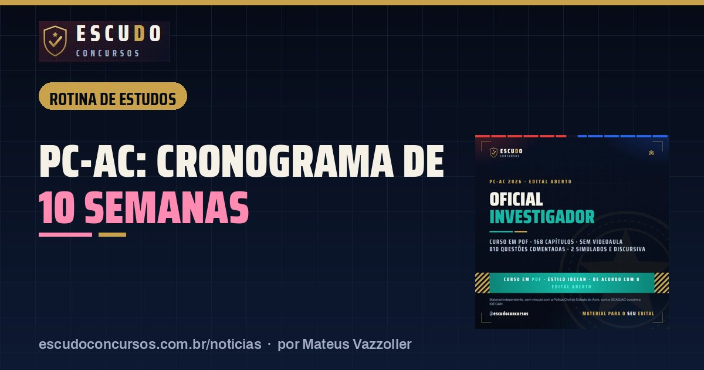

Cronograma de estudos PC-AC Oficial Investigador: 10 semanas até a prova de 24/01/2027
Rotina de estudosPublicado em 13 de novembro de 2026 · por Mateus Vazzoller, ESCUDO Concursos

Entre segunda-feira, 16/11/2026, e a prova da Polícia Civil do Acre para Oficial Investigador de Polícia, em 24/01/2027, há 10 semanas. Este plano reparte 20 horas por semana pelo peso do Edital nº 001 SEAD/PCAC, coloca os Conhecimentos Específicos no centro e divide o tempo em três fases: base, questões e simulados.
| Prova | 24/01/2027, das 7h às 12h, horário do Acre |
|---|---|
| Tempo até a prova | 10 semanas a partir de 16/11/2026 |
| Carga sugerida | 20 horas por semana |
| Fases | Base (semanas 1 a 5), questões (6 a 8), simulados (9 e 10) |
| Prova objetiva | 100 questões, 160 pontos, mínimo de 80 |
| Discursiva | 20 a 30 linhas, 40 pontos, mínimo de 50% |
Por que os Específicos ficam com mais da metade do tempo?
A prova objetiva tem 100 questões e 160 pontos. Os 60 itens de Conhecimentos Específicos têm peso 2 e somam 120 pontos, ou seja, 75% da nota. As outras 40 questões, de Básicos e Jurídicos, valem 1 ponto cada. O tempo semanal segue essa conta, com uma ressalva: zerar qualquer disciplina elimina, então até Realidade do Acre, com 4 questões, tem horário fixo.
| Bloco | Matéria | Horas por semana |
|---|---|---|
| Específicos | Contabilidade geral e análise financeira | 4h |
| Específicos | Estatística | 3h |
| Específicos | Análise de dados e TI e segurança da informação | 2h30 |
| Específicos | Arquivologia | 1h30 |
| Específicos | Noções de administração | 1h |
| Básicos | Língua Portuguesa | 1h |
| Básicos | Raciocínio Lógico | 1h |
| Básicos | Noções de Informática | 1h |
| Básicos | Realidade do Acre | 30min |
| Jurídicos | Penal e Processual Penal | 1h |
| Jurídicos | Legislação Institucional | 45min |
| Jurídicos | Constitucional e Administrativo | 45min |
| Discursiva | Redação técnica da carreira | 2h |
| Total | 20h |
Contabilidade e Estatística ganham mais horas porque são as matérias menos familiares para quem vem do Direito e as que mais pedem exercício: extrato bancário, PIX e TED, conciliação, média, desvio padrão e regressão só se aprendem fazendo conta.
Fase 1: base (semanas 1 a 5, de 16/11/2026 a 20/12/2026)
| Semana | Período | Foco nos Específicos |
|---|---|---|
| 1 | 16/11 a 22/11 | Contas, partidas dobradas, balanço e DRE; estatística descritiva |
| 2 | 23/11 a 29/11 | Matemática financeira e extratos bancários; medidas de tendência central e dispersão |
| 3 | 30/11 a 06/12 | PIX, TED, transações fracionadas e atípicas; probabilidade e quartis |
| 4 | 07/12 a 13/12 | Conciliação e cruzamento de dados; correlação, regressão e outliers |
| 5 | 14/12 a 20/12 | Análise de vínculos e registros de comunicação; arquivologia (três idades, tabela de temporalidade) |
Arquivologia, TI e administração correm em paralelo, em blocos curtos, desde a semana 1. Nos Jurídicos, leia a Lei 14.735/2023 e a LC/AC 129/2004 na letra da lei, marcando prazos, competências e exceções. Uma discursiva por semana, de 20 a 30 linhas.
Na semana 5 vencem dois prazos do concurso: as inscrições terminam em 14/12/2026 e o boleto de R$ 105,00 pode ser pago até 15/12/2026. Não deixe para o último dia.
Fase 2: questões (semanas 6 a 8, de 21/12/2026 a 10/01/2027)
| Semana | Período | O que muda |
|---|---|---|
| 6 | 21/12 a 27/12 | Metade do tempo de teoria vira questão de cinco alternativas |
| 7 | 28/12 a 03/01 | Revisão dos erros por tema; duas discursivas na semana |
| 8 | 04/01 a 10/01 | Bloco de 60 questões de Específicos cronometrado |
As semanas 6 e 7 têm Natal e Ano-Novo. Se perder dias, corte teoria nova, nunca a revisão dos erros: é ela que fixa o que já foi estudado.
Fase 3: simulados (semanas 9 e 10, de 11/01 a 24/01/2027)
- Um simulado completo por semana: 100 questões e a discursiva em 5 horas, começando às 7h, como no dia da prova.
- Comece pela parte que rende mais pontos por minuto para você e deixe 40 minutos reservados para a redação.
- Nos dias úteis, só revisão dos erros, da Legislação Institucional e da Realidade do Acre.
- Em 15/01/2027 saem os locais de prova: confira o seu e o trajeto até lá.
O curso ESCUDO PC-AC 2026 em PDF traz 2 simulados de 100 questões no formato do IDECAN, que se encaixam nas semanas 9 e 10.
Se você tem menos tempo
Com 12 horas por semana, mantenha a proporção: Específicos 7h (Contabilidade 2h30, Estatística 2h, Análise de dados e TI 1h30, Arquivologia e administração 1h), Básicos 2h, Jurídicos 1h30 e discursiva 1h30. Não corte a discursiva: ela vale 40 pontos e elimina quem faz menos da metade.
Curso ESCUDO Oficial Investigador da Polícia Civil do Acre em PDF: 168 capítulos e 810 questões, de acordo com o edital aberto, Prova discursiva e 2 simulados de 100 questões. De R$ 47 por R$ 37 com o cupom PCAC37 até 14/12/2026.
Ver o curso
Perguntas frequentes
Quantas horas por semana estudar para a PC-AC?
Este plano usa 20 horas por semana, com mais da metade nos Conhecimentos Específicos, que valem 75% da objetiva. Com 12 horas ainda dá, mantendo a proporção.
Qual matéria estudar primeiro para Oficial Investigador da PC-AC?
Contabilidade geral e análise financeira, seguida de Estatística. São os assuntos de maior peso dentro dos 60 itens de Específicos e os que mais exigem prática.
Quando começar os simulados da PC-AC?
Na semana 9, a partir de 11/01/2027: um simulado completo de 5 horas por semana, começando às 7h, como no dia da prova.
Leia também
- NotíciaPC-AC Oficial Investigador: inscrições abrem em 11/11, e a isenção dura só dois dias
10 de novembro de 2026 · Inscrições do concurso PC-AC para Oficial Investigador abrem em 11/11 no IDECAN. Isenção só em 11 e 12/11, taxa de R$ 105,00 e prova em 24/01/2027.
- Rotina de estudosCronograma de estudos para PM-SP Soldado: 16 semanas até a prova de 28/02/2027
8 de novembro de 2026 · Plano de 16 semanas para a prova da PM-SP Soldado de 28/02/2027: horas por matéria pelo peso do edital, fases de teoria, questões e simulados.
Guia completo do concurso: edital, vagas e o que cai · Mais notícias e dicas de concursos